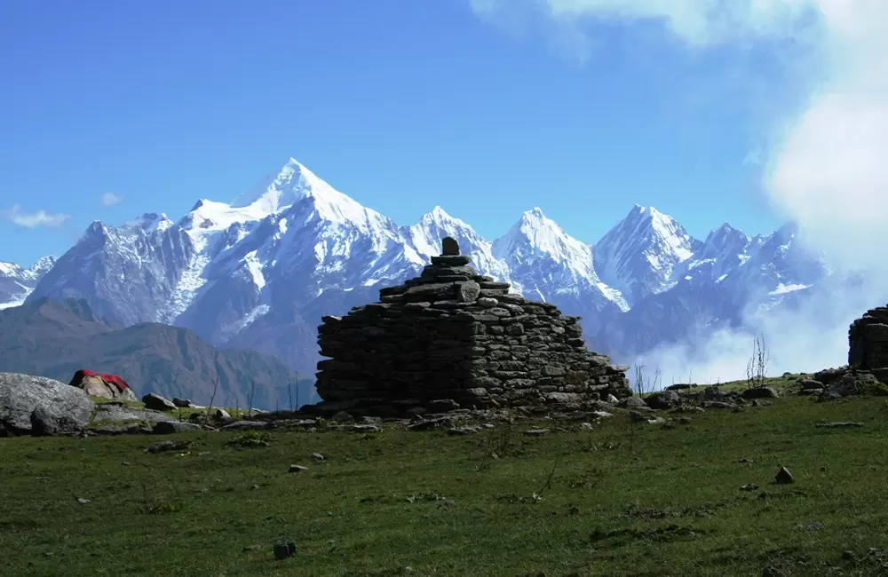

Khaliya Top
Khaliya Top, a breathtaking meadow at 3500 meters above sea level near Munsiyari, offers stunning views of Kumaun's snow-capped peaks.
Munsiyari, a charming village in Pithoragarh district, is a haven for nature lovers & adventure enthusiasts. Set at an altitude of 2298m, it offers stunning views of the snow-clad Himalayan peaks, including the iconic Panchachuli range.
Known as the base for treks to Milam, Ralam & Namik glaciers, Munsiyari is famed for its thrilling trekking trails & pristine natural beauty. Perched near the borders of India, Nepal, and Tibet, this serene village enjoys pleasant weather year-round, making it an ideal destination to experience untouched nature & breathtaking panoramas.
Munsiyari is connected by motorable roads to all the major towns and cities.
The nearest railhead is Tanakpur, about 286 km away.
The nearest airport is at Pithoragarh, but it is not a regular airport. Helicopter services are also available from Haldwani, and there is a helipad in Munsiyari.
Munsiyari is a trekker's paradise, offering iconic treks like Khaliya Top, Nanda Devi Base Camp, Milam Glacier, each promising breathtaking views & unforgettable adventures.
Munsiyari, nestled amidst snow-clad Himalayan peaks, is renowned for its pristine beauty and nearby villages, each offering unique cultural experiences worth exploring.
The dense pine, deodar, and rhododendron forests around Munsiyari are a haven for resident and migratory birds, including species like wagtails, ravens, Himalayan griffons, falcons, and serpent eagles.
You can buy some fantastic hand-woven carpets, Himalayan tree saplings, Organic grains like Rajma & Dal, Traditional handicrafts, Organic Tea from the markets of Munsiyari.
Khaliya Top, a breathtaking meadow at 3500 meters above sea level near Munsiyari, offers stunning views of Kumaun's snow-capped peaks.
Birthi Water Falls, a stunning 400-foot cascade near Munsiyari in Uttarakhand, is accessible via a short trek from Kalamuni Pass.
The Panchchuli peaks, a stunning range of five snow-capped summits in eastern Kumaon, soar between 6,334 to 6,904 meters near Munsiyari in Uttarakhand.
Ralam Dhura Pass sits at 5630 meters & offers one of the region's toughest treks, crossing two high-altitude passes and three glaciers over 10-12 days.
Nanda Devi Temple, one of Uttarakhand's oldest temples, is a sacred site dedicated to Goddess Nanda, reachable via a 3 km trek from Munsiyari at 7,500 feet.
Tamri Kund, a small sacred pond in Munsiyari's forests, is revered by locals to invoke rainfall during dry spells.
Madkot is a picturesque hamlet, which is blessed with scenic splendor, as the place is rich in vegetation. The tiny village is located about 22 km from Munsiyari
Betulidhar is a colossal garden blossomed with scarlet coloured rhododendrons, one of the best places to visit during the winters, offering exciting skiing opportunities.
Dharchula, a picturesque village on the banks of the Kali River, offers stunning views of the Panchachuli peaks and is a key stop on the Kailash Mansarovar route.
Around 17 km from Munsiyari, along the Mad Kot road comes Bhadeli, where you can stop to just enjoy serene nature, and a dip in the icy Goriganga River.
Milam Glacier, one of Kumaon's largest and remotest glaciers, spans 37 sq km and is the origin of the Goriganga River, accessible via a challenging six-day trek.
Perched on a lush hill on the way to Munsiyari, Kalamuni Temple, dedicated to Goddess Kali, radiates a divine aura & features frescoes of Kali Mata & meditating Naga Sadhus.
Munsiyari is a trekker's paradise, offering iconic treks like Khaliya Top, Nanda Devi Base Camp, Milam Glacier, each promising breathtaking views & unforgettable adventures.
Munsiyari, nestled amidst snow-clad Himalayan peaks, is renowned for its pristine beauty and nearby villages, each offering unique cultural experiences worth exploring.